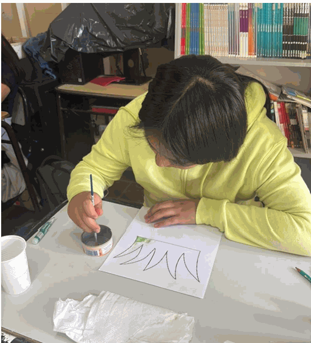
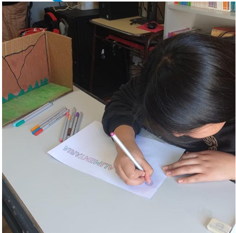
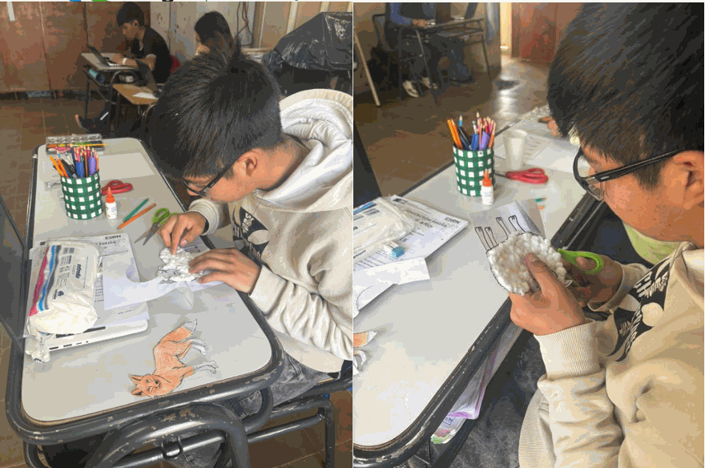
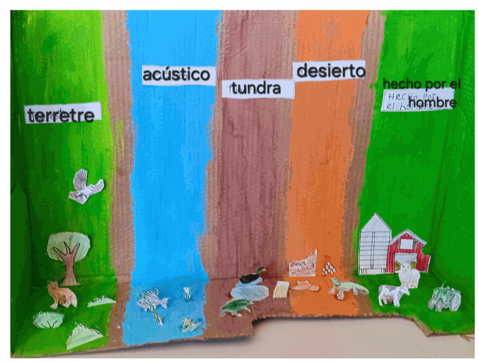

¡Aprender haciendo, creando y compartiendo también es una manera de construir conocimientos!
En la sede de El Caín y Río Chico, los estudiantes llevaron a la práctica los contenidos trabajados en las últimas clases a través de una propuesta creativa y enriquecedora: la construcción de una maqueta para representar una cadena alimentaria y tipos de ecosistemas.
Con el acompañamiento permanente de los docentes Fernanda y Ariel, utilizaron materiales concretos y accesibles para representar los componentes de un ecosistema y las relaciones de alimentación que se establecen entre los seres vivos.
A través de esta experiencia, pudieron recuperar y aplicar los conocimientos aprendidos, identificando productores y consumidores, y comprendiendo cómo se relacionan los organismos dentro de un ambiente.


Maqueta realizada por estudiante I.D.M, sede El Caín


Maqueta realizada por estudiante LL.S.E, sede El Caín


Maqueta realizada por estudiante M.B.A, sede Río Chico